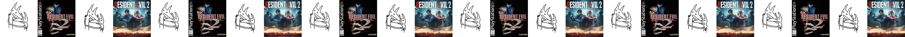

the first time i listened to car seat headrest was when someone put a song in a playlist for me. that turned out, less then good, so i really did not like them for a while. but a bit ago i kept relistening to sober to death (face to face) when i was sad, and this lead me to listening to twin fantasy in full.
so i opened up csh's bandcamp, and to my suprise twin fantasy was pay what you want to download, so i went ahead and downloaded it to my music player. then i found out, this was one of 2 versions of the album? twin fantasy originally released by will toledo under the name car seat headrest in 2011, but after he started to gain traction from his lofi indie rock solo project, he signed with a label and they formed a band. and then in 2018 they rereleased the album, now renaming the old one to twin fantasy (mirror to mirror), with the new one sometimes having the subtitle of (face to face).
i was listneing on my semi-fancy open backs (ft1 pro) so i thought that the rerecording that was recorded in a studio, with all the resorces the band now had, would be a better listen.
i did not really like the album.
my history with resident evil is just as, muddy, but less complicated then car seat headrest. although the details arent too specific for this, but i played resident evil 2 remake after i played 7 and 8, (which btw is how i would reccomend people get into the series if you cant stomach fixed camera angles).
the best part of this game, like with any resident evil game, is the dance. the dance of managing your resources, trying to convince yourself that you can kill this zombie, that you can make this area safe, that you have egnough bullets when you really dont, and doing really stupid puzzles and backtracking throughout the entire map, wanting to rip your skin off but in a good way.
i thought, and still think, that the third person camera was fine, but i really prefered the first person perspective of resident evil 7. but resident evil 2 remake is a good game, i liked leons childlike whimsy, and to be honest i wasn't a huge fan of claire. when i got towards the end of the game, i was told that i had to replay the game as the other charcter to get the full story, and it kinda pissed me off a bit, but i was told the game is basically an entirely diffrent puzzle this time around.
it was not.
i decided for some reason, to download the album and put it on my music player and give it another listen, but i didn't really wanna spend like 15 dollars on an album i wasn't a huge fan of. like it was fine, i enjoyed parts, but it didn't really... click with me like music i like does. so i downloaded the 2011 version, and gave it a listen on the way to thearpy (ironic)
i really liked this album.
i didn't know why at the time, but something about the album now was more, alive, it hit me more, it sounded more raw, more emotional, and more unique. the lofi aspect of the original, the messy and primal instumentation, and the vocals recorded in the back seat of his carhaha, heavily outwayed the "better" production value of the remake, and was much more unique, and felt more.. real?
this album sounds like a teenager crying, it sounds like pain, like meloncholy, and every part of the album, including the "flaws" that came from the limitiations will toledo has at the time lends to that identity, it all comes together to create the album that is twin fantasy, and i could sit here and compare bits of the 2 albums all day, and how even though some tracks are more dynamic and have more "interesting" intrumention and lyric choices on the remake, and vice versa, theres just something else missing from the remake. its removed from the context the original work was made in.
i played this version of the game in a, diffrent time. i played resident evil (1996) first then i played this, followed by resident evil 3: nemesis. the original resident evil trilogy is stunning. 3 games on their surface that seem so simmilar, and that should play so simmilar, play so incredibly diffrently in little but very important ways.
resident evil 2 is a very good game, and a very good sequal to its preddeseasor. in resident evil 1 you can play as chris or jill, and certain story elements would be diffrent, but resident evil 2 improves on that. there are a total of 2x2 playthroughs. there is both leon and claires runs, but also a and b, leading to 2 diffrent versions of the whole picture, and both runs being a consistant story throughout. that along with eneimes, puzzles and items being effected between your a and b runs. there are a few moments where this is clear, like in the locker room where on your a playthough you can choose to take everything, and leave nothing for the b playthough.
the fixed camera angles and tank controls are also just an amaaaazing control scheme. it feels like your always in a tight corner, not knowing whats to come, building tension constantly. and they use this to do actual planned cinmatography, theres a moment where you're going down a hall way, and you see something run over a window, and you later encounter that enemy (#ilovethelicker) and i think is one of the biggest benefits of this control and camera scheme.
the remake looses most of this. it ditches the fixed camera angles of the original, and the RE1 remake before it, for a "more cinimatic" third person action camera, simmilar to the last of usew or other modern third person shooters. which is still fun, but it almost feels like its a horror game in a format ment for a diffrent genre, atleast comapred to the original. but this is a thing that is almost universally praised about the remake? that it changed its control and camera scheme to something more... palletable? whenever i hear people talk about the switch in camera and control scheme, its never in praise of the 3rd person action camera, its always in disgust of fixed camera.
why do people pefer the resident evil 2 remake? why do people prefer face to face? in part because in so many ways they are technically better, but in that progress, in that "bettering" of these works they lose something, they lose themselves.
twin fantasy (face to face) calls itself twin fantasy, nearly replacing the original, even though (mirror to mirror) is still available to stream and download, if you search twin fantasy on any service the 2018 version is now the defult you will be pushed into listening to. a version of the album made years after it takes place, after the original came out, removed from that context. a ghost haunting the idea of the album it wears the skin of.
resident evil 2 remake is even more so guilty of this. up until a few weeks ago you couldn't purchace the original on the worlds biggest pc gaming platform, and its still not a game thats easy to play in current day. you can't even play the game on modern xbox. that along with future games refrencing the remake, ignoring the original, really shows that to capcom, this is a replacement to the original game. this imposter wearing its skin.
and i don't want to insult these works of art that people poored their souls into, but i cant help but think these remakes, even though they are so highly respected among fans, and beloved, are.. souless?
twin fantasy goes from a highly impactful lofi album, gushing with its own identity and sound, and charm to what feels like any other indie rock album. to me atleast.
and resident evil 2 goes from a classic to just a good game.
these peices of work are remakes. but something i haven't mentioned yet, because it kinda goes against some of my opinion, is that, in some ways, this also act as... not sequals, but as a conversation with the original work.
in resident evil 2 remake, in that corridor where you see the licker then face it, its not there... strange. they use this expectation fans of the original would of had to scare them, placing the licker in a diffrent spot, making that moment only work in full if you've played the original.
im newer to twin fantasy, so i cant really make any comparisions to make this point besides one track maybe. in the original nervous young inhumans the song refrences frankenstien and galvanism. alluding that the version of the man hes singing about is actually the version hes created in his head, a charcter. and in the 2018 version of that song, that verse is gone, and replaced with a spoken word more rambe-ly monolouge about good and evil and such. and i think this serves to show that, all these years later, maybe hes dropped this charcter from his head, and i think it shows that the 2018 version is a reflection, a more accturate reflection, then the previous version. but again, this wouldn't come across if you hadn't heard the original.
and i appricate all of this, i really do, but when a new listener or player wants to listen to twin fantasy or play resident evil 2, there is a higher chance they will end up experincing the versions that can't be fully understood or appricated without experincing the originals. i know this is very pretenious of me to say but im kinda right!!! therefor these works actually serve to replace the original, not matter the intentensions of the artists.
because art matters. thats all we have in this world. nothing else is even real besides how we feel about things, and eachother, and ourselves. and art serves to project ideas, meaning, and the self out into the world for others to have a glimpse of.
and i think video games and music are very simmilar in one important way. they are some of the most disrespected artforms out there, i think only television can compare. all art is incredibly disrespected under captilism or something, but there are so many horrible insidious ways video games and music get it worse.
and i think remakes are a stain on the video game industry, but the bigger issue is the loss of diffrence and identity. i think both (Face to Face) and RE2 remake serve to smooth out the original works, cutting off and sanding the edges that gave it its bite, its identity, and itself. becoming technically better and more innofessive, but with less punch.
to be frankbut i thought your name was cinnamon!! i dont care what capcom or will toledo have to say about the remakes. i know that CSH says that face to face is the original vision remade without technical limitations and more resoruces but. all creativity and art is defined by its limits, removing those, removes its identity. if we keep redoing and remaking our old works, its a differnt person, or quite litterly a diffrent team, making something do disconnected from who they are now.